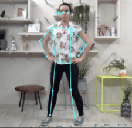
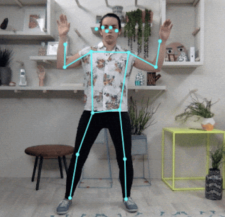
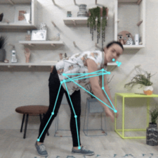
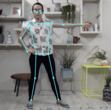

Home
Find Your Score
Schedule
FAQ
Maya's Confidence Score
April 3, 2021




The score is determined by a number of factors: stance, angles, accuracy, pivotal movement. A higher score equates to better and more functional performances and form. The baselines are an average of scores from previous sessions you've recorded with Forma. The max score you can get is 1